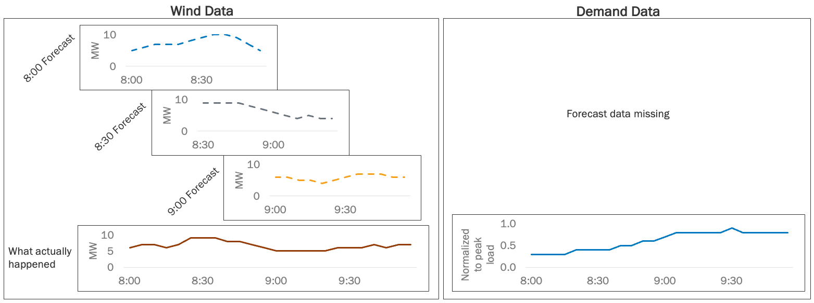

Working with Time Series Data
To follow along, you can download this tutorial as a Julia script (.jl) or Jupyter notebook (.ipynb).
In this tutorial, we will manually add, retrieve, and inspect time-series data in different formats, including identifying which components in a power System have time series data. Along the way, we will also use workarounds for missing forecast data and reuse identical time series profiles to avoid unnecessary memory usage. For a conceptual overview of how time series data is structured in PowerSystems.jl, see Time Series Data.
Example Data and Setup
We will make an example System with a wind generator, a gas ThermalStandard, and two loads, then add the time series needed to model, for example, wind forecast uncertainty, time-varying fuel prices, and a planned generator outage. Here is the available data:

For the wind generator, we have the historical point (deterministic) forecasts of power output. The forecasts were generated every 30 minutes with a 5-minute resolution and 1-hour horizon. We also have measurements of what actually happened at 5-minute resolution over the 2 hours. For the gas generator, we have natural-gas fuel prices (/GJ) at 5-minute resolution (for illustrative purposes only) over the same 2-hour window. Later we will add a planned-outage schedule that takes the unit out of service during the second hour. For the loads, note that the forecast data is missing. We only have the historical measurements of total load for the system, which is normalized to the system's peak load. Load the PowerSystems, Dates, and TimeSeries packages to get started:
using PowerSystems
using Dates
using TimeSeriesAs usual, we need to define a power System that holds all our data. Let's define a simple system with a bus, a wind generator, a gas thermal unit with a time-invariant cost (see Adding an Operating Cost), and two loads:
system = System(100.0); # 100 MVA base power
bus1 = ACBus(;
number = 1,
name = "bus1",
available = true,
bustype = ACBusTypes.REF,
angle = 0.0,
magnitude = 1.0,
voltage_limits = (min = 0.9, max = 1.05),
base_voltage = 230.0,
);
wind1 = RenewableDispatch(;
name = "wind1",
available = true,
bus = bus1,
active_power = 0.0, # Per-unitized by device base_power
reactive_power = 0.0, # Per-unitized by device base_power
rating = 1.0, # 10 MW per-unitized by device base_power
prime_mover_type = PrimeMovers.WT,
reactive_power_limits = (min = 0.0, max = 0.0), # per-unitized by device base_power
power_factor = 1.0,
operation_cost = RenewableGenerationCost(nothing),
base_power = 10.0, # MVA
);
load1 = PowerLoad(;
name = "load1",
available = true,
bus = bus1,
active_power = 0.0, # Per-unitized by device base_power
reactive_power = 0.0, # Per-unitized by device base_power
base_power = 10.0, # MVA
max_active_power = 1.0, # 10 MW per-unitized by device base_power
max_reactive_power = 0.0,
);
load2 = PowerLoad(;
name = "load2",
available = true,
bus = bus1,
active_power = 0.0, # Per-unitized by device base_power
reactive_power = 0.0, # Per-unitized by device base_power
base_power = 30.0, # MVA
max_active_power = 1.0, # 30 MW per-unitized by device base_power
max_reactive_power = 0.0,
);
heat_rate_curve = PiecewisePointCurve([
(5.0, 7.0),
(15.0, 8.0),
(25.0, 9.0),
])
fuel_curve = FuelCurve(; value_curve = heat_rate_curve, fuel_cost = 5.0)
thermal_cost = ThermalGenerationCost(;
variable = fuel_curve,
fixed = 0.0,
start_up = 0.0,
shut_down = 0.0,
)
gas1 = ThermalStandard(;
name = "gas1",
available = true,
status = true,
bus = bus1,
active_power = 0.0,
reactive_power = 0.0,
rating = 1.0,
active_power_limits = (min = 0.2, max = 1.0),
reactive_power_limits = nothing,
ramp_limits = (up = 0.2, down = 0.2),
operation_cost = thermal_cost,
base_power = 25.0,
time_limits = (up = 1.0, down = 1.0),
must_run = false,
prime_mover_type = PrimeMovers.CC,
fuel = ThermalFuels.NATURAL_GAS,
)
add_components!(system, [bus1, wind1, gas1, load1, load2])Recall that we can also set the System's unit base to natural units (MW) to make it easier to inspect results:
set_units_base_system!(system, "NATURAL_UNITS")[ Info: Unit System changed to UnitSystem.NATURAL_UNITS = 2Before we get started, recall that we also can see a summary of the system by printing it:
system| System | |
| Property | Value |
|---|---|
| Name | |
| Description | |
| System Units Base | NATURAL_UNITS |
| Base Power | 100.0 |
| Base Frequency | 60.0 |
| Num Components | 5 |
| Static Components | |
| Type | Count |
|---|---|
| ACBus | 1 |
| PowerLoad | 2 |
| RenewableDispatch | 1 |
| ThermalStandard | 1 |
Observe that there is no mention of time series data in the system yet.
Add and Retrieve a Single Time Series
Define shared time stamps with 5-minute resolution for the 2-hour window, which will be reused across our time series:
resolution = Dates.Minute(5)
timestamps = range(DateTime("2020-01-01T08:00:00"); step = resolution, length = 24)Dates.DateTime("2020-01-01T08:00:00"):Dates.Minute(5):Dates.DateTime("2020-01-01T09:55:00")Fuel cost (cost-specific API)
Start with fuel prices for gas1. Build the SingleTimeSeries using a TimeSeries.TimeArray of input data:
fuel_cost_values = [
4.5, 4.6, 4.7, 4.8, 5.0, 5.2, 5.5, 5.8, 6.0, 6.2, 6.5, 6.8,
7.0, 7.0, 6.8, 6.5, 6.2, 6.0, 5.8, 5.5, 5.2, 5.0, 4.8, 4.6,
]
fuel_cost_timearray = TimeArray(timestamps, fuel_cost_values)
fuel_cost_ts = SingleTimeSeries(; name = "gas_price", data = fuel_cost_timearray)SingleTimeSeries("gas_price", 24×1 TimeSeries.TimeArray{Float64, 1, Dates.DateTime, Vector{Float64}} 2020-01-01T08:00:00 to 2020-01-01T09:55:00, Dates.Millisecond(300000), nothing, InfrastructureSystems.InfrastructureSystemsInternal(Base.UUID("d938b2ef-90b1-429c-b95f-40638ce904be"), nothing, nothing, nothing))This 2-hour window illustrates the API. Production cost models typically use longer horizons (for example, hourly fuel prices over a full day).
So far, this time series has been defined, but not attached to our System in any way. Attach with set_fuel_cost! because gas1 uses a FuelCurve in its ThermalGenerationCost:
set_fuel_cost!(system, gas1, fuel_cost_ts)FuelCurve:
value_curve: PiecewisePointCurve (a type of InputOutputCurve) where function is: piecewise linear y = f(x) connecting points:
(x = 5.0, y = 7.0)
(x = 15.0, y = 8.0)
(x = 25.0, y = 9.0)
power_units: UnitSystem.NATURAL_UNITS = 2
fuel_cost: StaticTimeSeriesKey(SingleTimeSeries, "gas_price", Dates.DateTime("2020-01-01T08:00:00"), Dates.Millisecond(300000), 24, Dict{String, Any}())
startup_fuel_offtake: LinearCurve (a type of InputOutputCurve) where function is: f(x) = 0.0 x + 0.0
vom_cost: LinearCurve (a type of InputOutputCurve) where function is: f(x) = 0.0 x + 0.0Notice that fuel_cost now points to a key with the same name we defined above: "gas_price".
Retrieve the profile with get_fuel_cost (values are in $/GJ; multiply by the heat rate for $/MWh):
get_fuel_cost(gas1; start_time = DateTime("2020-01-01T08:00:00"))24×1 TimeSeries.TimeArray{Float64, 1, Dates.DateTime, Vector{Float64}} 2020-01-01T08:00:00 to 2020-01-01T09:55:00
┌─────────────────────┬─────┐
│ │ A │
├─────────────────────┼─────┤
│ 2020-01-01T08:00:00 │ 4.5 │
│ 2020-01-01T08:05:00 │ 4.6 │
│ 2020-01-01T08:10:00 │ 4.7 │
│ 2020-01-01T08:15:00 │ 4.8 │
│ 2020-01-01T08:20:00 │ 5.0 │
│ 2020-01-01T08:25:00 │ 5.2 │
│ 2020-01-01T08:30:00 │ 5.5 │
│ 2020-01-01T08:35:00 │ 5.8 │
│ ⋮ │ ⋮ │
│ 2020-01-01T09:25:00 │ 6.0 │
│ 2020-01-01T09:30:00 │ 5.8 │
│ 2020-01-01T09:35:00 │ 5.5 │
│ 2020-01-01T09:40:00 │ 5.2 │
│ 2020-01-01T09:45:00 │ 5.0 │
│ 2020-01-01T09:50:00 │ 4.8 │
│ 2020-01-01T09:55:00 │ 4.6 │
└─────────────────────┴─────┘
9 rows omittedWind measurements (component-field API)
A single time-varying profile is always built the same way. What differs is where and how you attach the data. We just attached one to a cost structure, and now we'll attach one to a component field.
First, print wind1 to see its data:
wind1RenewableDispatch: wind1:
name: wind1
available: true
bus: ACBus: bus1
active_power: 0.0
reactive_power: 0.0
rating: 10.0
prime_mover_type: PrimeMovers.WT = 22
reactive_power_limits: (min = 0.0, max = 0.0)
power_factor: 1.0
operation_cost: RenewableGenerationCost composed of variable: CostCurve{LinearCurve}, curtailment_cost: CostCurve{LinearCurve}
base_power: 10.0
services: 0-element Vector{Service}
dynamic_injector: nothing
ext: Dict{String, Any}()
InfrastructureSystems.SystemUnitsSettings:
base_value: 100.0
unit_system: UnitSystem.NATURAL_UNITS = 2
has_supplemental_attributes: false
has_time_series: falseSee the has_time_series field at the bottom is false. Now, use same construction pattern above to define the wind output measurements:
wind_values = [6.0, 7, 7, 6, 7, 9, 9, 9, 8, 8, 7, 6, 5, 5, 5, 5, 5, 6, 6, 6, 7, 6, 7, 7]
wind_timearray = TimeArray(timestamps, wind_values)
wind_time_series = SingleTimeSeries(;
name = "max_active_power",
data = wind_timearray,
)SingleTimeSeries("max_active_power", 24×1 TimeSeries.TimeArray{Float64, 1, Dates.DateTime, Vector{Float64}} 2020-01-01T08:00:00 to 2020-01-01T09:55:00, Dates.Millisecond(300000), nothing, InfrastructureSystems.InfrastructureSystemsInternal(Base.UUID("32bb78f2-bff9-4214-a6b1-cc2920c9f7a6"), nothing, nothing, nothing))Note that we've chosen the name max_active_power, which is the default time series profile name when using PowerSimulations.jl for simulations. Attach to wind1 with add_time_series!:
add_time_series!(system, wind1, wind_time_series)StaticTimeSeriesKey(SingleTimeSeries, "max_active_power", Dates.DateTime("2020-01-01T08:00:00"), Dates.Millisecond(300000), 24, Dict{String, Any}())Let's double-check this worked by calling show_time_series:
show_time_series(wind1)┌──────────────────┬──────────────────┬─────────────────────┬───────────────────
│ time_series_type │ name │ initial_timestamp │ resolut ⋯
│ String │ String │ Dates.DateTime │ Dates.Millisec ⋯
├──────────────────┼──────────────────┼─────────────────────┼───────────────────
│ SingleTimeSeries │ max_active_power │ 2020-01-01T08:00:00 │ 300000 milliseco ⋯
└──────────────────┴──────────────────┴─────────────────────┴───────────────────
3 columns omittedNow wind1 has its first time-series data set. Recall that you can also print wind1 and check the has_time_series field like we did above. Finally, let's retrieve and inspect the new timeseries, using get_time_series_array:
get_time_series_array(SingleTimeSeries, wind1, "max_active_power")24×1 TimeSeries.TimeArray{Float64, 1, Dates.DateTime, Vector{Float64}} 2020-01-01T08:00:00 to 2020-01-01T09:55:00
┌─────────────────────┬─────┐
│ │ A │
├─────────────────────┼─────┤
│ 2020-01-01T08:00:00 │ 6.0 │
│ 2020-01-01T08:05:00 │ 7.0 │
│ 2020-01-01T08:10:00 │ 7.0 │
│ 2020-01-01T08:15:00 │ 6.0 │
│ 2020-01-01T08:20:00 │ 7.0 │
│ 2020-01-01T08:25:00 │ 9.0 │
│ 2020-01-01T08:30:00 │ 9.0 │
│ 2020-01-01T08:35:00 │ 9.0 │
│ ⋮ │ ⋮ │
│ 2020-01-01T09:25:00 │ 6.0 │
│ 2020-01-01T09:30:00 │ 6.0 │
│ 2020-01-01T09:35:00 │ 6.0 │
│ 2020-01-01T09:40:00 │ 7.0 │
│ 2020-01-01T09:45:00 │ 6.0 │
│ 2020-01-01T09:50:00 │ 7.0 │
│ 2020-01-01T09:55:00 │ 7.0 │
└─────────────────────┴─────┘
9 rows omittedVerify this matches your expectation based on the input data.
Add and Retrieve a Forecast
Next, let's add the wind power forecasts. We will use a Deterministic format for the point forecasts. Because we have forecasts with at different initial times, the input data must be a dictionary where the keys are the initial times and the values are vectors or TimeSeries.TimeArrays of the forecast data. Set up the example input data:
wind_forecast_data = Dict(
DateTime("2020-01-01T08:00:00") => [5.0, 6, 7, 7, 7, 8, 9, 10, 10, 9, 7, 5],
DateTime("2020-01-01T08:30:00") => [9.0, 9, 9, 9, 8, 7, 6, 5, 4, 5, 4, 4],
DateTime("2020-01-01T09:00:00") => [6.0, 6, 5, 5, 4, 5, 6, 7, 7, 7, 6, 6],
);Define the Deterministic forecast and attach it to wind1:
wind_forecast = Deterministic("max_active_power", wind_forecast_data, resolution);
add_time_series!(system, wind1, wind_forecast);Let's call show_time_series once again:
show_time_series(wind1)┌──────────────────┬──────────────────┬─────────────────────┬──────────────┬────
│ time_series_type │ name │ initial_timestamp │ resolution │ ⋯
│ String │ String │ Dates.DateTime │ Dates.Minute │ D ⋯
├──────────────────┼──────────────────┼─────────────────────┼──────────────┼────
│ Deterministic │ max_active_power │ 2020-01-01T08:00:00 │ 5 minutes │ ⋯
└──────────────────┴──────────────────┴─────────────────────┴──────────────┴────
4 columns omitted
┌──────────────────┬──────────────────┬─────────────────────┬───────────────────
│ time_series_type │ name │ initial_timestamp │ resolut ⋯
│ String │ String │ Dates.DateTime │ Dates.Millisec ⋯
├──────────────────┼──────────────────┼─────────────────────┼───────────────────
│ SingleTimeSeries │ max_active_power │ 2020-01-01T08:00:00 │ 300000 milliseco ⋯
└──────────────────┴──────────────────┴─────────────────────┴───────────────────
3 columns omittedNotice that we now have two types of time series listed – the single time series and the forecasts. Finally, let's retrieve the forecast data to double check it was added properly, specifying the initial time to get the 2nd forecast window starting at 8:30:
get_time_series_array(
Deterministic,
wind1,
"max_active_power";
start_time = DateTime("2020-01-01T08:30:00"),
)12×1 TimeSeries.TimeArray{Float64, 1, Dates.DateTime, SubArray{Float64, 1, Vector{Float64}, Tuple{UnitRange{Int64}}, true}} 2020-01-01T08:30:00 to 2020-01-01T09:25:00
┌─────────────────────┬─────┐
│ │ A │
├─────────────────────┼─────┤
│ 2020-01-01T08:30:00 │ 9.0 │
│ 2020-01-01T08:35:00 │ 9.0 │
│ 2020-01-01T08:40:00 │ 9.0 │
│ 2020-01-01T08:45:00 │ 9.0 │
│ 2020-01-01T08:50:00 │ 8.0 │
│ 2020-01-01T08:55:00 │ 7.0 │
│ 2020-01-01T09:00:00 │ 6.0 │
│ 2020-01-01T09:05:00 │ 5.0 │
│ 2020-01-01T09:10:00 │ 4.0 │
│ 2020-01-01T09:15:00 │ 5.0 │
│ 2020-01-01T09:20:00 │ 4.0 │
│ 2020-01-01T09:25:00 │ 4.0 │
└─────────────────────┴─────┘Add A Time Series Using Scaling Factors
Let's add the load time series. Recall that this data is normalized to the peak system power, so we'll use it to scale both of our loads. We call normalized time series data scaling factors. First, let's create our input data TimeSeries.TimeArray with the example data and the same time stamps we used in the wind time series:
load_values = [0.3, 0.3, 0.3, 0.3, 0.4, 0.4, 0.4, 0.4, 0.5, 0.5, 0.6, 0.6,
0.7, 0.8, 0.8, 0.8, 0.8, 0.8, 0.9, 0.8, 0.8, 0.8, 0.8, 0.8];
load_timearray = TimeArray(timestamps, load_values);Again, define a SingleTimeSeries, but this time use the scaling_factor_multiplier parameter to scale this time series from normalized values to power values:
load_time_series = SingleTimeSeries(;
name = "max_active_power",
data = load_timearray,
scaling_factor_multiplier = get_max_active_power,
);Notice that we assigned the get_max_active_power function to scale the time series, rather than a value, making the time series reusable for multiple components or multiple fields in a component. Note that the values are normalized using each device's max_active_power parameter, not the system-wide base_power. Now, add the scaling factor time series to both loads to save memory and avoid data duplication:
add_time_series!(system, [load1, load2], load_time_series);Let's take a look at load1, including printing its parameters...
load1PowerLoad: load1:
name: load1
available: true
bus: ACBus: bus1
active_power: 0.0
reactive_power: 0.0
base_power: 10.0
max_active_power: 10.0
max_reactive_power: 0.0
conformity: LoadConformity.UNDEFINED = 2
services: 0-element Vector{Service}
dynamic_injector: nothing
ext: Dict{String, Any}()
InfrastructureSystems.SystemUnitsSettings:
base_value: 100.0
unit_system: UnitSystem.NATURAL_UNITS = 2
has_supplemental_attributes: false
has_time_series: true...as well as its time series:
show_time_series(load1)┌──────────────────┬──────────────────┬─────────────────────┬───────────────────
│ time_series_type │ name │ initial_timestamp │ resolut ⋯
│ String │ String │ Dates.DateTime │ Dates.Millisec ⋯
├──────────────────┼──────────────────┼─────────────────────┼───────────────────
│ SingleTimeSeries │ max_active_power │ 2020-01-01T08:00:00 │ 300000 milliseco ⋯
└──────────────────┴──────────────────┴─────────────────────┴───────────────────
3 columns omittedNotice that each load now has two references to max_active_power. This is intentional. There is the parameter, max_active_power, which is the maximum demand of each load at any time (10 MW or 30 MW). There is also max_active_power the time series, which is the time varying demand over the 2-hour window, calculated using the scaling factors and the max_active_power parameter. This means that if we change the max_active_power parameter, the time series will also change when we retrieve it! This is also true when we apply the same scaling factors to multiple components or parameters.
Let's check the impact that these two max_active_power data sources have on the times series data when we retrieve it. Get the max_active_power time series for load1:
get_time_series_array(SingleTimeSeries, load1, "max_active_power") # in MW24×1 TimeSeries.TimeArray{Float64, 1, Dates.DateTime, Vector{Float64}} 2020-01-01T08:00:00 to 2020-01-01T09:55:00
┌─────────────────────┬─────┐
│ │ A │
├─────────────────────┼─────┤
│ 2020-01-01T08:00:00 │ 3.0 │
│ 2020-01-01T08:05:00 │ 3.0 │
│ 2020-01-01T08:10:00 │ 3.0 │
│ 2020-01-01T08:15:00 │ 3.0 │
│ 2020-01-01T08:20:00 │ 4.0 │
│ 2020-01-01T08:25:00 │ 4.0 │
│ 2020-01-01T08:30:00 │ 4.0 │
│ 2020-01-01T08:35:00 │ 4.0 │
│ ⋮ │ ⋮ │
│ 2020-01-01T09:25:00 │ 8.0 │
│ 2020-01-01T09:30:00 │ 9.0 │
│ 2020-01-01T09:35:00 │ 8.0 │
│ 2020-01-01T09:40:00 │ 8.0 │
│ 2020-01-01T09:45:00 │ 8.0 │
│ 2020-01-01T09:50:00 │ 8.0 │
│ 2020-01-01T09:55:00 │ 8.0 │
└─────────────────────┴─────┘
9 rows omittedSee that the normalized values have been scaled up by 10 MW. Now let's look at load2. First check its max_active_power parameter:
get_max_active_power(load2)30.0This has a higher peak maximum demand of 30 MW. Next, retrieve its max_active_power time series:
get_time_series_array(SingleTimeSeries, load2, "max_active_power") # in MW24×1 TimeSeries.TimeArray{Float64, 1, Dates.DateTime, Vector{Float64}} 2020-01-01T08:00:00 to 2020-01-01T09:55:00
┌─────────────────────┬──────┐
│ │ A │
├─────────────────────┼──────┤
│ 2020-01-01T08:00:00 │ 9.0 │
│ 2020-01-01T08:05:00 │ 9.0 │
│ 2020-01-01T08:10:00 │ 9.0 │
│ 2020-01-01T08:15:00 │ 9.0 │
│ 2020-01-01T08:20:00 │ 12.0 │
│ 2020-01-01T08:25:00 │ 12.0 │
│ 2020-01-01T08:30:00 │ 12.0 │
│ 2020-01-01T08:35:00 │ 12.0 │
│ ⋮ │ ⋮ │
│ 2020-01-01T09:25:00 │ 24.0 │
│ 2020-01-01T09:30:00 │ 27.0 │
│ 2020-01-01T09:35:00 │ 24.0 │
│ 2020-01-01T09:40:00 │ 24.0 │
│ 2020-01-01T09:45:00 │ 24.0 │
│ 2020-01-01T09:50:00 │ 24.0 │
│ 2020-01-01T09:55:00 │ 24.0 │
└─────────────────────┴──────┘
9 rows omittedObserve the difference compared to load1's time series. Finally, retrieve the underlying time series data with no scaling factor multiplier applied:
get_time_series_array(SingleTimeSeries,
load2,
"max_active_power";
ignore_scaling_factors = true,
)24×1 TimeSeries.TimeArray{Float64, 1, Dates.DateTime, Vector{Float64}} 2020-01-01T08:00:00 to 2020-01-01T09:55:00
┌─────────────────────┬─────┐
│ │ A │
├─────────────────────┼─────┤
│ 2020-01-01T08:00:00 │ 0.3 │
│ 2020-01-01T08:05:00 │ 0.3 │
│ 2020-01-01T08:10:00 │ 0.3 │
│ 2020-01-01T08:15:00 │ 0.3 │
│ 2020-01-01T08:20:00 │ 0.4 │
│ 2020-01-01T08:25:00 │ 0.4 │
│ 2020-01-01T08:30:00 │ 0.4 │
│ 2020-01-01T08:35:00 │ 0.4 │
│ ⋮ │ ⋮ │
│ 2020-01-01T09:25:00 │ 0.8 │
│ 2020-01-01T09:30:00 │ 0.9 │
│ 2020-01-01T09:35:00 │ 0.8 │
│ 2020-01-01T09:40:00 │ 0.8 │
│ 2020-01-01T09:45:00 │ 0.8 │
│ 2020-01-01T09:50:00 │ 0.8 │
│ 2020-01-01T09:55:00 │ 0.8 │
└─────────────────────┴─────┘
9 rows omittedNotice that this is the normalized input data, which is still being stored underneath. Each load is using a reference to that data when we call get_time_series_array to avoid unnecessary data duplication.
Transform a SingleTimeSeries into a Forecast
Finally, let's use a workaround to handle the missing load forecast data. We will assume a perfect forecast where the forecast is based on the SingleTimeSeries we just added. Rather than unnecessarily duplicating and reformatting data, use PowerSystems.jl's dedicated transform_single_time_series! function to generate a DeterministicSingleTimeSeries, which saves memory while behaving just like a Deterministic forecast. Before we call transform_single_time_series!, we need to remove the SingleTimeSeries from the wind component. This is because the wind component already has a Deterministic forecast with the name "max_active_power", and having both a Deterministic and a DeterministicSingleTimeSeries with the same name is not allowed. If we tried to keep both, functions like get_time_series wouldn't know which forecast to retrieve when you request "max_active_power". Let's remove the SingleTimeSeries to avoid this conflict:
remove_time_series!(system, SingleTimeSeries, wind1, "max_active_power");Now we can transform the remaining SingleTimeSeries (the ones attached to the loads):
transform_single_time_series!(
system,
Dates.Hour(1), # horizon
Dates.Minute(30), # interval
);Let's see the results for load1's time series summary:
show_time_series(load1)┌───────────────────────────────┬──────────────────┬─────────────────────┬──────
│ time_series_type │ name │ initial_timestamp │ ⋯
│ String │ String │ Dates.DateTime │ D ⋯
├───────────────────────────────┼──────────────────┼─────────────────────┼──────
│ DeterministicSingleTimeSeries │ max_active_power │ 2020-01-01T08:00:00 │ 300 ⋯
└───────────────────────────────┴──────────────────┴─────────────────────┴──────
5 columns omitted
┌──────────────────┬──────────────────┬─────────────────────┬───────────────────
│ time_series_type │ name │ initial_timestamp │ resolut ⋯
│ String │ String │ Dates.DateTime │ Dates.Millisec ⋯
├──────────────────┼──────────────────┼─────────────────────┼───────────────────
│ SingleTimeSeries │ max_active_power │ 2020-01-01T08:00:00 │ 300000 milliseco ⋯
└──────────────────┴──────────────────┴─────────────────────┴───────────────────
3 columns omittedNotice we now have a load forecast data set with the resolution, horizon, and, interval matching our wind forecasts. Retrieve the first forecast window:
get_time_series_array(
DeterministicSingleTimeSeries,
load1,
"max_active_power";
start_time = DateTime("2020-01-01T08:00:00"),
)12×1 TimeSeries.TimeArray{Float64, 1, Dates.DateTime, Vector{Float64}} 2020-01-01T08:00:00 to 2020-01-01T08:55:00
┌─────────────────────┬─────┐
│ │ A │
├─────────────────────┼─────┤
│ 2020-01-01T08:00:00 │ 3.0 │
│ 2020-01-01T08:05:00 │ 3.0 │
│ 2020-01-01T08:10:00 │ 3.0 │
│ 2020-01-01T08:15:00 │ 3.0 │
│ 2020-01-01T08:20:00 │ 4.0 │
│ 2020-01-01T08:25:00 │ 4.0 │
│ 2020-01-01T08:30:00 │ 4.0 │
│ 2020-01-01T08:35:00 │ 4.0 │
│ 2020-01-01T08:40:00 │ 5.0 │
│ 2020-01-01T08:45:00 │ 5.0 │
│ 2020-01-01T08:50:00 │ 6.0 │
│ 2020-01-01T08:55:00 │ 6.0 │
└─────────────────────┴─────┘See that load1's scaling factor multiplier is still being applied as expected.
Transform with Multiple Intervals
PowerSystems supports creating multiple forecast transforms from the same SingleTimeSeries, each with a different interval. This is useful when a component needs forecasts updated at different frequencies. Use delete_existing = false to preserve the existing transform and add a second one with a different interval:
transform_single_time_series!(
system,
Dates.Hour(1), # horizon
Dates.Hour(1); # a longer interval
delete_existing = false,
);Now load1 has two DeterministicSingleTimeSeries forecasts with different intervals. Let's verify:
show_time_series(load1)┌───────────────────────────────┬──────────────────┬─────────────────────┬──────
│ time_series_type │ name │ initial_timestamp │ ⋯
│ String │ String │ Dates.DateTime │ D ⋯
├───────────────────────────────┼──────────────────┼─────────────────────┼──────
│ DeterministicSingleTimeSeries │ max_active_power │ 2020-01-01T08:00:00 │ 300 ⋯
│ DeterministicSingleTimeSeries │ max_active_power │ 2020-01-01T08:00:00 │ 300 ⋯
└───────────────────────────────┴──────────────────┴─────────────────────┴──────
5 columns omitted
┌──────────────────┬──────────────────┬─────────────────────┬───────────────────
│ time_series_type │ name │ initial_timestamp │ resolut ⋯
│ String │ String │ Dates.DateTime │ Dates.Millisec ⋯
├──────────────────┼──────────────────┼─────────────────────┼───────────────────
│ SingleTimeSeries │ max_active_power │ 2020-01-01T08:00:00 │ 300000 milliseco ⋯
└──────────────────┴──────────────────┴─────────────────────┴───────────────────
3 columns omittedWhen multiple intervals exist for the same name, you must specify interval to disambiguate retrieval:
get_time_series_array(
DeterministicSingleTimeSeries,
load1,
"max_active_power";
start_time = DateTime("2020-01-01T08:00:00"),
interval = Dates.Minute(30),
)12×1 TimeSeries.TimeArray{Float64, 1, Dates.DateTime, Vector{Float64}} 2020-01-01T08:00:00 to 2020-01-01T08:55:00
┌─────────────────────┬─────┐
│ │ A │
├─────────────────────┼─────┤
│ 2020-01-01T08:00:00 │ 3.0 │
│ 2020-01-01T08:05:00 │ 3.0 │
│ 2020-01-01T08:10:00 │ 3.0 │
│ 2020-01-01T08:15:00 │ 3.0 │
│ 2020-01-01T08:20:00 │ 4.0 │
│ 2020-01-01T08:25:00 │ 4.0 │
│ 2020-01-01T08:30:00 │ 4.0 │
│ 2020-01-01T08:35:00 │ 4.0 │
│ 2020-01-01T08:40:00 │ 5.0 │
│ 2020-01-01T08:45:00 │ 5.0 │
│ 2020-01-01T08:50:00 │ 6.0 │
│ 2020-01-01T08:55:00 │ 6.0 │
└─────────────────────┴─────┘You can also query forecast parameters for a specific interval:
get_forecast_horizon(system; interval = Dates.Hour(1))3600000 millisecondsget_forecast_interval(system; interval = Dates.Minute(30))1800000 millisecondsTo selectively remove one interval's forecasts while keeping the other:
remove_time_series!(
system,
DeterministicSingleTimeSeries,
load1,
"max_active_power";
interval = Dates.Hour(1),
)You can also query the system-wide forecast parameters:
get_forecast_horizon(system)3600000 millisecondsget_forecast_interval(system)1800000 millisecondsAdd Time Series to Supplemental Attributes
So far, we attached time series to component fields (wind1, loads) or cost data. Now we'll attach time series to a SupplementalAttribute, which is contextual metadata linked to components but stored outside their electrical definitions.
Here we add a PlannedOutage schedule on gas1. Create the attribute and attach it to the generator with add_supplemental_attribute!:
planned = PlannedOutage(; outage_schedule = "outage_schedule")
add_supplemental_attribute!(system, gas1, planned)Now we can attach the time series to the outage attribute (not to gas1) with add_time_series!:
outage_values = vcat(zeros(12), ones(12)) # in service first hour, outaged second hour
outage_timearray = TimeArray(timestamps, outage_values)
outage_ts = SingleTimeSeries(; name = "outage_schedule", data = outage_timearray)
add_time_series!(system, planned, outage_ts)StaticTimeSeriesKey(SingleTimeSeries, "outage_schedule", Dates.DateTime("2020-01-01T08:00:00"), Dates.Millisecond(300000), 24, Dict{String, Any}())Retrieve from the outage attribute with get_time_series_array – values are 0.0 (in service) or 1.0 (outaged):
get_time_series_array(SingleTimeSeries, planned, "outage_schedule")24×1 TimeSeries.TimeArray{Float64, 1, Dates.DateTime, Vector{Float64}} 2020-01-01T08:00:00 to 2020-01-01T09:55:00
┌─────────────────────┬─────┐
│ │ A │
├─────────────────────┼─────┤
│ 2020-01-01T08:00:00 │ 0.0 │
│ 2020-01-01T08:05:00 │ 0.0 │
│ 2020-01-01T08:10:00 │ 0.0 │
│ 2020-01-01T08:15:00 │ 0.0 │
│ 2020-01-01T08:20:00 │ 0.0 │
│ 2020-01-01T08:25:00 │ 0.0 │
│ 2020-01-01T08:30:00 │ 0.0 │
│ 2020-01-01T08:35:00 │ 0.0 │
│ ⋮ │ ⋮ │
│ 2020-01-01T09:25:00 │ 1.0 │
│ 2020-01-01T09:30:00 │ 1.0 │
│ 2020-01-01T09:35:00 │ 1.0 │
│ 2020-01-01T09:40:00 │ 1.0 │
│ 2020-01-01T09:45:00 │ 1.0 │
│ 2020-01-01T09:50:00 │ 1.0 │
│ 2020-01-01T09:55:00 │ 1.0 │
└─────────────────────┴─────┘
9 rows omittedSee Supplemental attributes and Manipulating Data Sets for general attach and query patterns.
Finding, Retrieving, and Inspecting Time Series
Now, let's complete this tutorial by doing a few sanity checks on the data that we've added, where are we will also examine components with time series and retrieve the time series data in a few more ways. Recall we can print the System to summarize the data in our system:
system| System | |
| Property | Value |
|---|---|
| Name | |
| Description | |
| System Units Base | NATURAL_UNITS |
| Base Power | 100.0 |
| Base Frequency | 60.0 |
| Num Components | 5 |
| Static Components | |
| Type | Count |
|---|---|
| ACBus | 1 |
| PowerLoad | 2 |
| RenewableDispatch | 1 |
| ThermalStandard | 1 |
| StaticTimeSeries Summary | |||||||
| owner_type | owner_category | name | time_series_type | initial_timestamp | resolution | count | time_step_count |
|---|---|---|---|---|---|---|---|
| String | String | String | String | String | Dates.CompoundPeriod | Int64 | Int64 |
| PowerLoad | Component | max_active_power | SingleTimeSeries | 2020-01-01T08:00:00 | 5 minutes | 2 | 24 |
| ThermalStandard | Component | gas_price | SingleTimeSeries | 2020-01-01T08:00:00 | 5 minutes | 1 | 24 |
| PlannedOutage | SupplementalAttribute | outage_schedule | SingleTimeSeries | 2020-01-01T08:00:00 | 5 minutes | 1 | 24 |
| Forecast Summary | |||||||||
| owner_type | owner_category | name | time_series_type | initial_timestamp | resolution | count | horizon | interval | window_count |
|---|---|---|---|---|---|---|---|---|---|
| String | String | String | String | String | Dates.CompoundPeriod | Int64 | Dates.CompoundPeriod | Dates.CompoundPeriod | Int64 |
| PowerLoad | Component | max_active_power | DeterministicSingleTimeSeries | 2020-01-01T08:00:00 | 5 minutes | 2 | 1 hour | 30 minutes | 3 |
| PowerLoad | Component | max_active_power | DeterministicSingleTimeSeries | 2020-01-01T08:00:00 | 5 minutes | 1 | 1 hour | 1 hour | 2 |
| RenewableDispatch | Component | max_active_power | Deterministic | 2020-01-01T08:00:00 | 5 minutes | 1 | 1 hour | 30 minutes | 3 |
| ThermalStandard | Component | gas_price | DeterministicSingleTimeSeries | 2020-01-01T08:00:00 | 5 minutes | 1 | 1 hour | 30 minutes | 3 |
| ThermalStandard | Component | gas_price | DeterministicSingleTimeSeries | 2020-01-01T08:00:00 | 5 minutes | 1 | 1 hour | 1 hour | 2 |
Notice that new tables have been added, showing the count of each Type of component that has a given time series type. As expected from the earlier removal, wind1 has only its Deterministic forecast and no DeterministicSingleTimeSeries. Finally, let's do a last data sanity check on the forecasts. Since we defined the wind time series in MW instead of scaling factors, let's make sure none of our forecasts exceeds the max_active_power parameter. Instead of using get_time_series_array where we need to remember some details of the time series we're looking up, let's use get_time_series_keys to refresh our memories:
keys = get_time_series_keys(wind1)1-element Vector{ForecastKey}:
ForecastKey(Deterministic, "max_active_power", Dates.DateTime("2020-01-01T08:00:00"), Dates.Minute(5), Dates.Minute(60), Dates.Millisecond(1800000), 3, Dict{String, Any}())See the forecast key is first, so let's retrieve it using get_time_series:
forecast = get_time_series(wind1, keys[1])Deterministic("max_active_power", DataStructures.SortedDict(Dates.DateTime("2020-01-01T08:00:00") => [5.0, 6.0, 7.0, 7.0, 7.0, 8.0, 9.0, 10.0, 10.0, 9.0, 7.0, 5.0], Dates.DateTime("2020-01-01T08:30:00") => [9.0, 9.0, 9.0, 9.0, 8.0, 7.0, 6.0, 5.0, 4.0, 5.0, 4.0, 4.0], Dates.DateTime("2020-01-01T09:00:00") => [6.0, 6.0, 5.0, 5.0, 4.0, 5.0, 6.0, 7.0, 7.0, 7.0, 6.0, 6.0]), Dates.Minute(5), Dates.Millisecond(1800000), nothing, InfrastructureSystems.InfrastructureSystemsInternal(Base.UUID("d935895c-2598-4a1c-9e3d-62f4cb3f8d2f"), nothing, nothing, nothing))See that unlike when we used get_time_series_array, this returns an object we can manipulate. Use iterate_windows to cycle through the 3 forecast windows and inspect the peak value:
for window in iterate_windows(forecast)
@show values(maximum(window))
endvalues(maximum(window)) = [10.0]
values(maximum(window)) = [9.0]
values(maximum(window)) = [7.0]Finally, use get_max_active_power to check the expected maximum:
get_max_active_power(wind1)10.0See that the forecasts are not exceeding this maximum – sanity check complete.
Unlike PowerLoad components, RenewableDispatch components do not have a max_active_power field, so check get_max_active_power to see how its calculated.
Getting Timestamps and Values Separately
When working with a retrieved time series object, you can extract the timestamps and values independently rather than always working with the combined TimeArray. Use get_time_series_timestamps to get just the timestamps for a time series:
get_time_series_timestamps(SingleTimeSeries, load1, "max_active_power")24-element Vector{Dates.DateTime}:
2020-01-01T08:00:00
2020-01-01T08:05:00
2020-01-01T08:10:00
2020-01-01T08:15:00
2020-01-01T08:20:00
2020-01-01T08:25:00
2020-01-01T08:30:00
2020-01-01T08:35:00
2020-01-01T08:40:00
2020-01-01T08:45:00
⋮
2020-01-01T09:15:00
2020-01-01T09:20:00
2020-01-01T09:25:00
2020-01-01T09:30:00
2020-01-01T09:35:00
2020-01-01T09:40:00
2020-01-01T09:45:00
2020-01-01T09:50:00
2020-01-01T09:55:00Use get_time_series_values to get just the numeric values. Note the scaling factor multiplier is still applied:
get_time_series_values(SingleTimeSeries, load1, "max_active_power")24-element Vector{Float64}:
3.0
3.0
3.0
3.0
4.0
4.0
4.0
4.0
5.0
5.0
⋮
8.0
8.0
8.0
9.0
8.0
8.0
8.0
8.0
8.0The same functions work for forecasts – just pass a start_time to select the window:
get_time_series_timestamps(
Deterministic,
wind1,
"max_active_power";
start_time = DateTime("2020-01-01T08:00:00"),
)
get_time_series_values(
Deterministic,
wind1,
"max_active_power";
start_time = DateTime("2020-01-01T08:00:00"),
)12-element view(::Vector{Float64}, 1:12) with eltype Float64:
5.0
6.0
7.0
7.0
7.0
8.0
9.0
10.0
10.0
9.0
7.0
5.0Inspecting Time Series Metadata
Rather than retrieving the full data, you can inspect the structural metadata of a time series object returned by get_time_series. Let's retrieve the wind forecast object again and inspect its properties:
forecast = get_time_series(wind1, keys[1])Deterministic("max_active_power", DataStructures.SortedDict(Dates.DateTime("2020-01-01T08:00:00") => [5.0, 6.0, 7.0, 7.0, 7.0, 8.0, 9.0, 10.0, 10.0, 9.0, 7.0, 5.0], Dates.DateTime("2020-01-01T08:30:00") => [9.0, 9.0, 9.0, 9.0, 8.0, 7.0, 6.0, 5.0, 4.0, 5.0, 4.0, 4.0], Dates.DateTime("2020-01-01T09:00:00") => [6.0, 6.0, 5.0, 5.0, 4.0, 5.0, 6.0, 7.0, 7.0, 7.0, 6.0, 6.0]), Dates.Minute(5), Dates.Millisecond(1800000), nothing, InfrastructureSystems.InfrastructureSystemsInternal(Base.UUID("d935895c-2598-4a1c-9e3d-62f4cb3f8d2f"), nothing, nothing, nothing))Get the resolution (time step between values):
get_resolution(forecast)5 minutesGet the horizon (total duration of one forecast window):
get_horizon(forecast)60 minutesSimilarly, for the load SingleTimeSeries:
sts = get_time_series(SingleTimeSeries, load1, "max_active_power")
get_resolution(sts)300000 millisecondsNext Steps
In this tutorial, you defined, added, and retrieved time series on component fields, cost data, and supplemental attributes, including deterministic forecasts. Along the way, we reduced data duplication using normalized scaling factors and transform_single_time_series! to address missing load forecast data. Next you might like to: